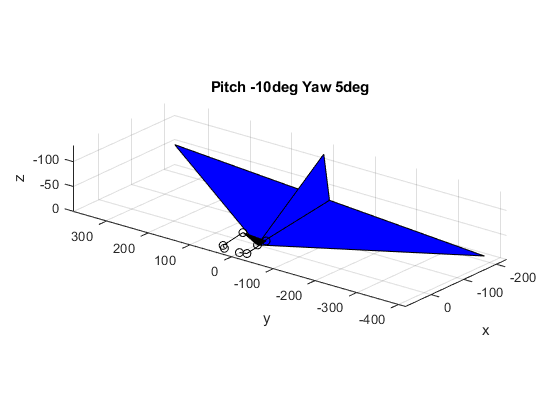
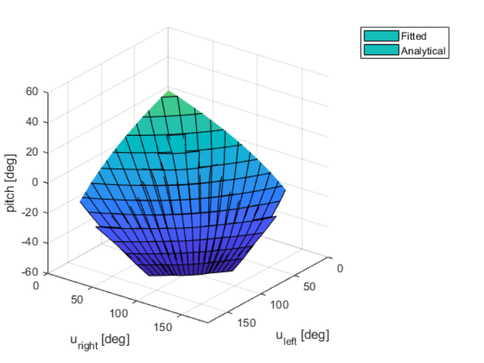
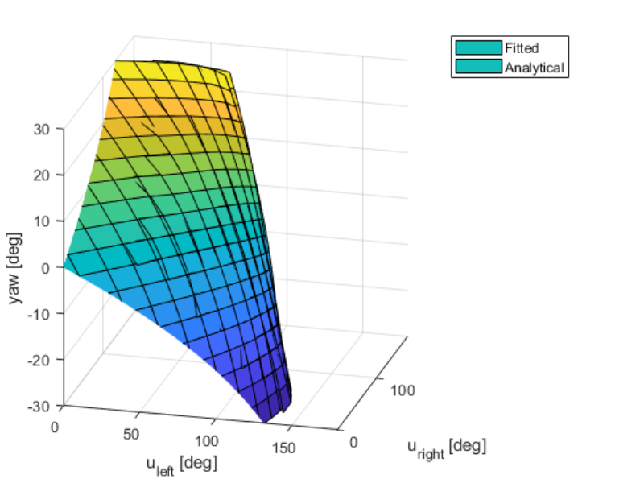

Tail Kinematics

Figure 1. The tail is a 2 DoF parallel manipulator (I ignore the 2 local roll DoF on the S-S couplers). It works as an elevator and rudder by changing its pitch and yaw.
Given a wanted pitch and yaw position of the tail, what should be the angular position of the servos (R1, R2)? This is an inverse kinematics problem.
One approach would be simply using (R1+R2)/2 for tail-pitching and using (R1-R2)/2 for tail-yawing. However, this approach implicitly assumes perfect symmetry, which assumption my fabricated skill did not satisfy. Luckily, I can solve the inverse kinematics analytically without assuming symmetry (Figure 2).

Figure 2. Visualization of one solution. MATLAB code can be found here.
The solution involves 8 matrix multiplications, 8 trigonometry operations, and 4 anti-trigonometry operations. My onboard Arduino doesn’t want such complicated computation. So I numerically simplified the inverse kinematics solution into a pair of 3rd order polynomials (details are here).


Figure 3. Comparison between fitted (numerically simplified) solutions and analytical solutions. The result of fitting seems good enough for me.
My string-processing code automatically transforms the polynomials into a C function, which is copied and pasted into my ornithopter. A video demo is as follows.